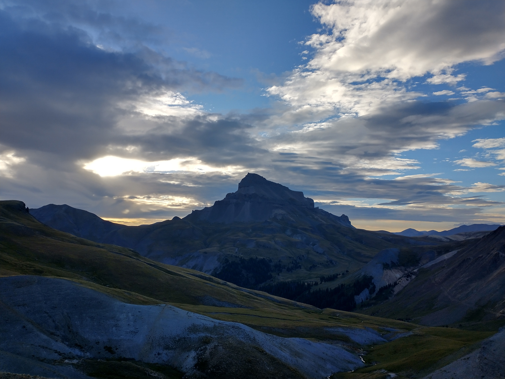
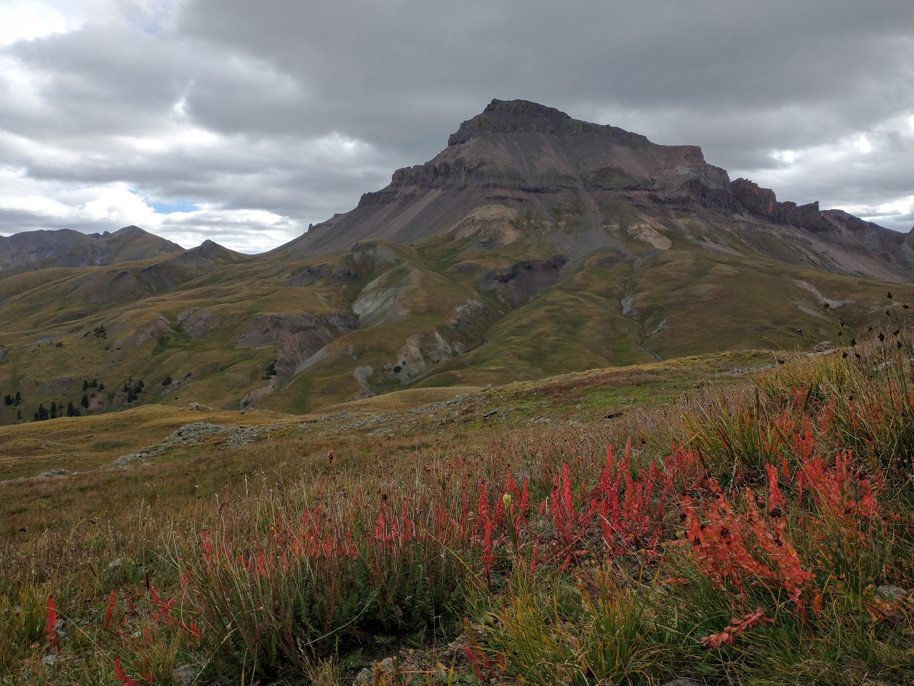
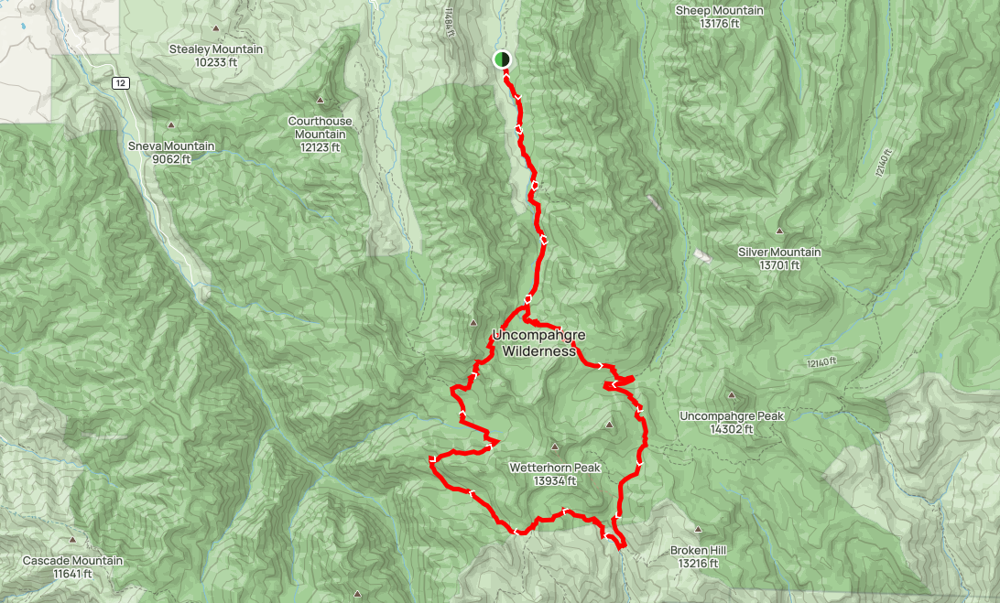
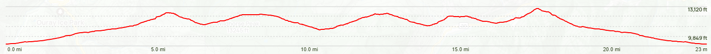

Loop around Mount Wetterhorn
Date: 09/02/2023
Start Time: 04:22
Distance: 23.2 Miles
Elevation Gain: 6,870 ft
End Time: 18:43
RT Time: 14:21
 Fiery morning clouds
Fiery morning clouds
 Looking back down the valley
Looking back down the valley
 Crossing the saddle into the first bowl
Crossing the saddle into the first bowl
Uncompahgre in the distance
 Can anyone explain why this river is yellow??
Can anyone explain why this river is yellow??
 Uncompahgre framed by convenient boulders
Uncompahgre framed by convenient boulders
Weather moving in, but got some nice flowers in the shot
 That's pretty green
That's pretty green
 At this point weather looked too threatening to attempt to summit
At this point weather looked too threatening to attempt to summit
 Continuing the loop past Wetterhorn
Continuing the loop past Wetterhorn
 View from the southwest corner
View from the southwest corner
 Nearing the end of the loop
Nearing the end of the loop
 Late rainstorm, beautiful rainbow!
Late rainstorm, beautiful rainbow!
 This photo needs some editing
This photo needs some editing
 Looking back up the valley on the way back
Looking back up the valley on the way back
Route map plotted in AllTrails
Elevation vs. distance plot
 Beautiful morning view of Matterhorn and Wetterhorn
Beautiful morning view of Matterhorn and Wetterhorn